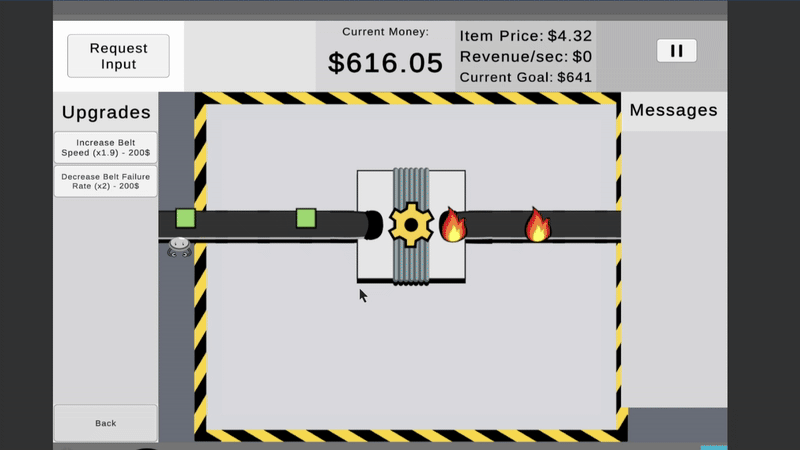

My Various Projects
"Failsafe", an idle, factory building game

Failsafe, a game developed for the University of Washington Game Development Capstone. Developed in 10 weeks from ideation to publication and iteration, it garnered about 4000 players during the 2-3 weeks after publication. During development, the capstone focused on strengthening game development skills and Agile and Scrum development and principles.